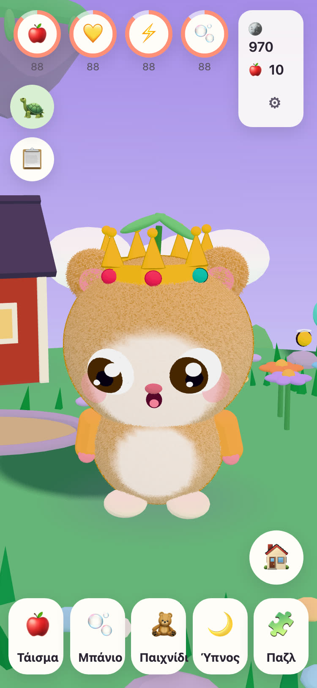
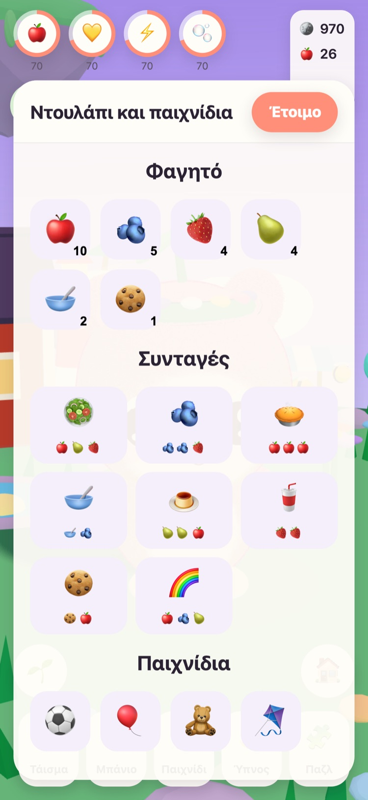
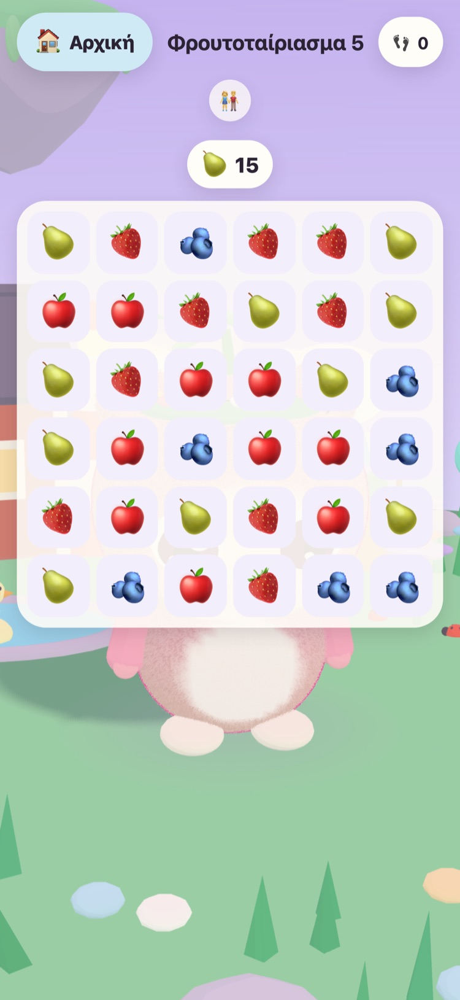
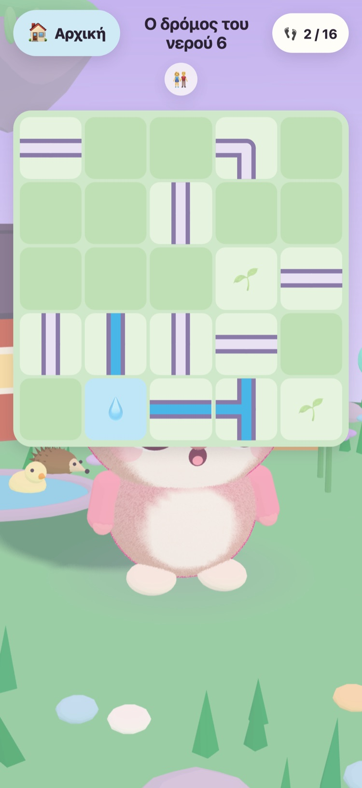
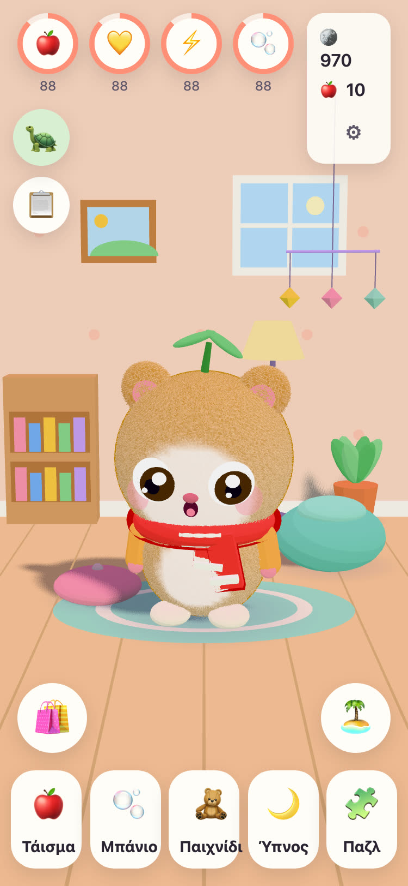
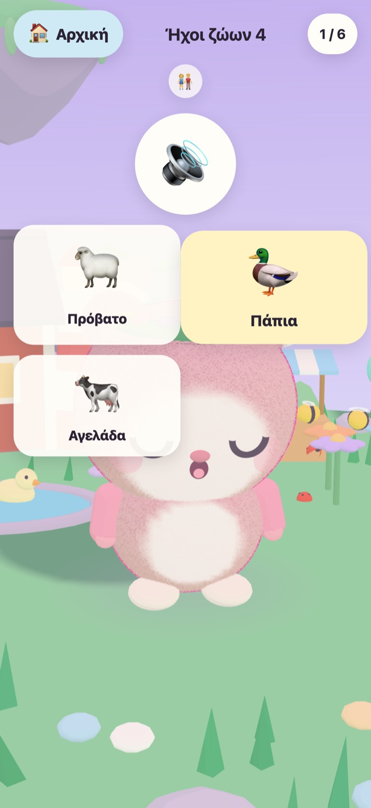

JUNOLittle Worlds
Το παιδί σας βγάζει ένα Juno από το αυγό, το φροντίζει και λύνει ήπια παζλ που ξυπνούν ένα αιωρούμενο νησί. Ένα ήρεμο παιχνίδι για παιδιά 6 έως 10 ετών, σε iPhone και iPad.
Γεια σου! Βρήκα τρία ζεστά αυγά. Ποιο είναι το δικό σου;
- Χωρίς διαφημίσεις
- Χωρίς παρακολούθηση
- Χωρίς λογαριασμό
- Χωρίς χρονόμετρα ή πίεση






Ένας μικρός φίλος, μόνο δικός του
Ο Παππούς Tintin, η γέρικη χελώνα που φροντίζει το Λιβαδονήσι, βρήκε τρία ζεστά αυγά. Το παιδί σας διαλέγει ένα και δίνει όνομα σε ό,τι βγει. Από εκεί και πέρα το Juno είναι δικό του: να το ταΐζει, να το πλένει, να παίζει μαζί του και να το βάζει για ύπνο.
-
Διάλεξε ένα αυγό
Τρία ζεστά αυγά, τρία χρώματα. Το παιδί σας διαλέγει ένα και το βλέπει να ανοίγει.
-
Δώσε του όνομα, αγάπησέ το
Φαγητό, μπάνιο, παιχνίδι και ύπνος. Το Juno δείχνει πώς νιώθει και μεγαλώνει όσο μεγαλώνει η φιλία τους.
-
Ξύπνα το νησί
Κάθε αστέρι από τα παζλ φέρνει πίσω το φως στο Λιβαδονήσι, ώσπου τα λουλούδια, οι μέλισσες και οι πάπιες να γυρίσουν ξανά σπίτι τους.
Φαγητό, μπάνιο, παιχνίδι, ύπνος
Διαφορετικά φαγητά και παιχνίδια, σαπουνόφουσκες στο μπάνιο και ένα Juno που δείχνει πώς νιώθει. Οι ανάγκες μειώνονται αργά και ποτέ δεν φτάνουν στο μηδέν, οπότε ένα Juno δεν χάνεται ποτέ.
57 ήπια παζλ
«Φρουτοταίριασμα», «Κήπος της Μνήμης», «Ήχοι ζώων» και «Ήχοι οχημάτων» με αληθινές ηχογραφήσεις. Τα αστέρια κερδίζονται με τις κινήσεις, ποτέ με τον χρόνο, και η νέα προσπάθεια είναι πάντα δωρεάν.
Ένα νησί που ξυπνά
Ο Ανθόκηπος ανοίγει με μέλισσες, η Λίμνη με τις Πάπιες γεμίζει νερό και πάπιες, και οι σπόροι γίνονται μήλα και φράουλες στα παρτέρια του κήπου.
Ένα δωμάτιο να γίνει ζεστή φωλιά
Με τα νομίσματα από τα παζλ και τις καθημερινές αποστολές αγοράζονται διακοσμητικά για το δωμάτιο του Juno και ρούχα να φορέσει. Τίποτα στο μαγαζί με νομίσματα δεν κοστίζει αληθινά χρήματα.
Ανάγνωση φωναχτά
Ο Παππούς Tintin διαβάζει φωναχτά κάθε φράση με τη δική του ζεστή φωνή, για παιδιά που δεν ξέρουν ακόμα να διαβάζουν. Πατήστε πάνω του για να την ακούσετε ξανά.
Μια ενότητα «Για γονείς»
Πίσω από μια πύλη γονέων: γλώσσα, ανάγνωση φωναχτά, ήχοι, ώρα ύπνου και μια ήπια υπενθύμιση για διάλειμμα. Την ώρα του ύπνου το Juno κοιμάται και τα παζλ περιμένουν μέχρι το πρωί.
Μιλά 21 γλώσσες
Ο Παππούς Tintin μιλά στο παιδί σας στη δική του γλώσσα. Επιλέξτε μία στην ενότητα «Για γονείς» ή αφήστε το παιχνίδι να ακολουθεί τη συσκευή.
English Svenska Dansk Norsk Suomi Deutsch Nederlands Français Español Italiano Português (Brasil) Polski Русский Ελληνικά Türkçe Bahasa Melayu Kiswahili हिन्दी 日本語 한국어 简体中文
Φτιαγμένο από έναν παππού
Το JUNO φτιάχτηκε στη Σουηδία από έναν παππού για την εγγονή του: ένα παιχνίδι που θα χαιρόταν να τη βλέπει να παίζει. Ο Παππούς Tintin, η χελώνα του παιχνιδιού, είναι ο ίδιος.
Γι' αυτό οι κανόνες είναι απλοί. Τίποτα που πιέζει, τίποτα που ξεγελά και τίποτα που συλλέγει οτιδήποτε για το παιδί σας.
Δωρεάν, χωρίς διαφημίσεις
Το JUNO κατεβαίνει δωρεάν και δεν έχει διαφημίσεις, παρακολούθηση ή λογαριασμό. Ό,τι κάνει το παιδί σας μένει στη συσκευή σας. Δείτε τη σελίδα απορρήτου.
Ένας ενήλικας μπορεί να αγοράσει το JUNO Plus ή το Χειμωνιάτικο Πακέτο στην ενότητα «Για γονείς», πίσω από την πύλη γονέων. Και τα δύο είναι εφάπαξ αγορές που μπορείτε να επαναφέρετε και να μοιραστείτε με την οικογένειά σας.